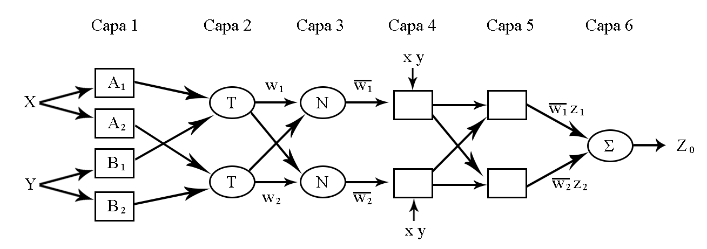
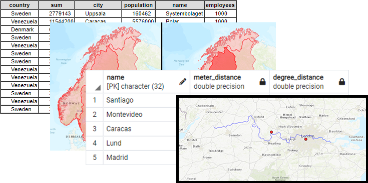
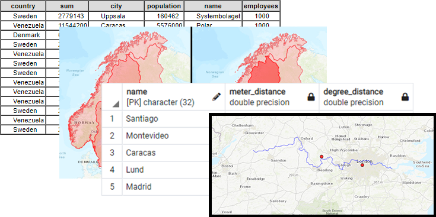

Experience with ArcGIS Pro (ArcPro), ArcGIS and QGIS, Terrset, ENVI, PostGIS (PostgreSQL)
I've employed Python for programmatically solving tedious and repetitive tasks, and data visualization, I lean to open-source solutions with libraries like OSGeo, GDAL, OSR, Cartopy, Earthpy & QGIS tools.
Data Management & Harmonization, Digitization & georeferencing, Remote Sensing & Satellite Imagery, Spatial Databases Management & Development, Cartography


R, Rstudio, Python (Scipy, Numpy, among others), Matlab, Spreadsheets in several softwares...
Data wrangling & visualization, Point Pattern Analysis, Spatial Autocorrelation, Clustering and Classification (Linear and Non-linear Machine learning algorithms), Uncertainty & Error Assessment (Montecarlo)


I'm currently developing a Machine Learning algorithm in Pytorch for classifying remotely sensed data (LANDSAT Imagery & Sentinel-2 Radar Imagery) for a Wetlands Land Cover Classification.
Experience with Python Applications in Physical Geography and Earth Sciences, Object-Oriented Programming & Data Science
Project: Horizon Angles (ArcGIS Toolbox)
I developed a script that calculates the maximum angular obstruction for each cell on a raster, particularly from a digital elevation model (DEM), recreating functions from GRASS GIS and GDAL, it combines ArcPy. The project required the design of a graphic user interface (GUI) allowing to easily parse parameters between ArcGIS and Python. Available on Github.


Project: The prospects of coffee cultivation in South America in a future climate
I developed group of Python scripts for classifying The Earth's climate zones based on Köppen-Gauger method, averaging NC files in climate normals for global temperature and precipitation from several CMIP6 experiments: historical and Representative Concentration Pathway 8.5(RCP) models. Available on Github.


Seismic processing and interpretation, Petrophysics & well logs.
Fuzzy Logic, Neural Networks & Deep learning algorithms for regression.
Bachelor's Thesis
Title: “Vp logs prediction from well logs and seismic using ANFIS”
The goal was to infer sonic logs for 27 wells located in a productive basin in Venezuela, using fuzzy logic and neural networks combining radioactive and resistive logs different seismic attributes as input. The generated maps showed the expected low p-wave velocity behavior for most of the geologic horizons around each currently active well.
The project included OpendTect Neural Networks module, MATLAB ANFIS (Adaptative Neuro-Fuzzy Inference System) for training the fuzzy sets, SegyMat library for reading traces, and Petrel, Oasis Montaj for data management.



Spatial Databases (PostGIS)
Structured Query Language
PostgreSQL, MySQL, pgAdmin
Database modelling and design

 



Web design and development using HTML, CSS and JavaScript
Finished projects:
CIAL School website